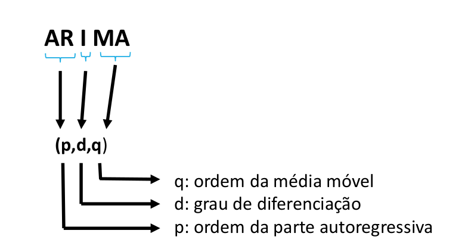
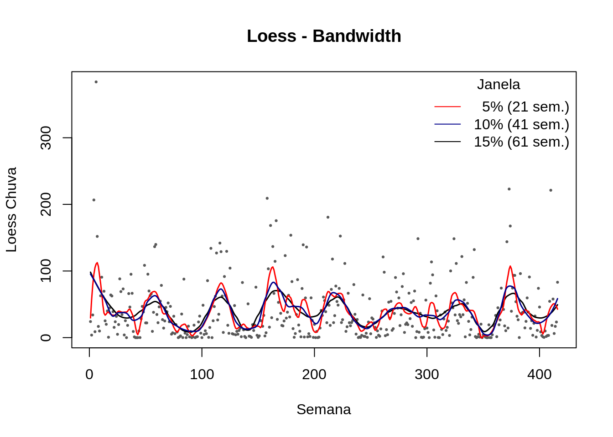
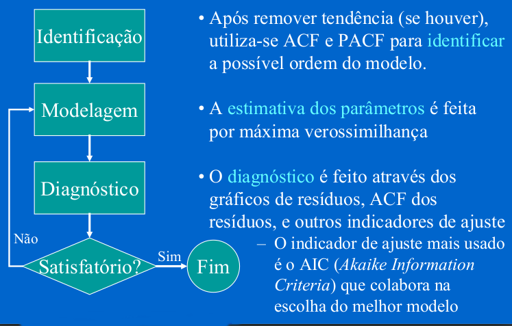
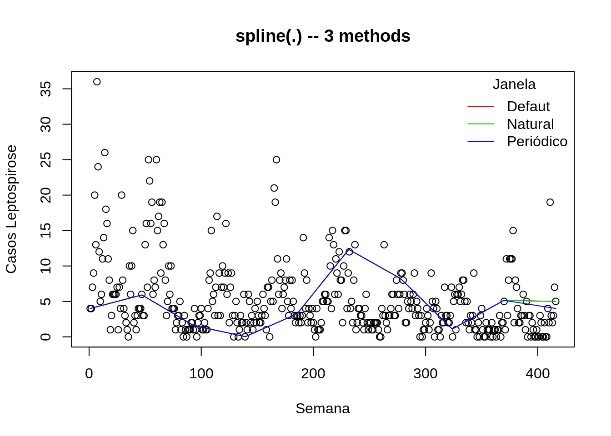
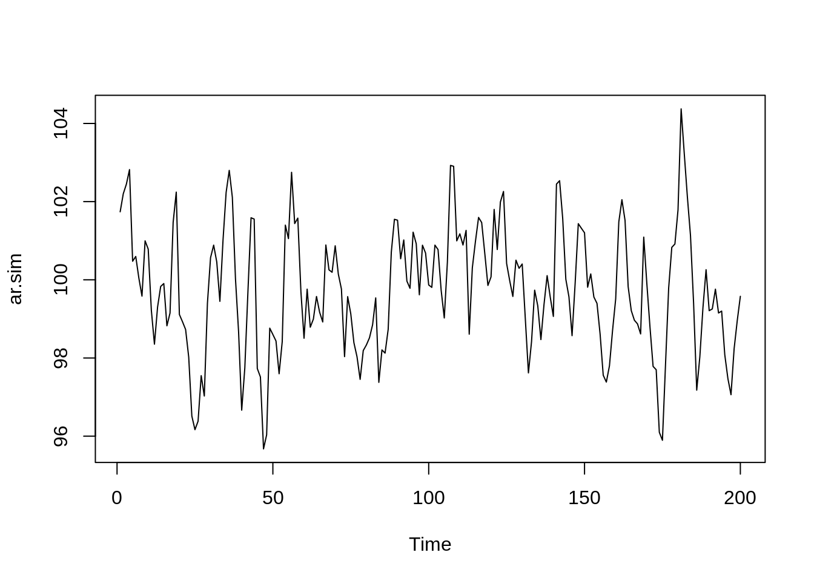
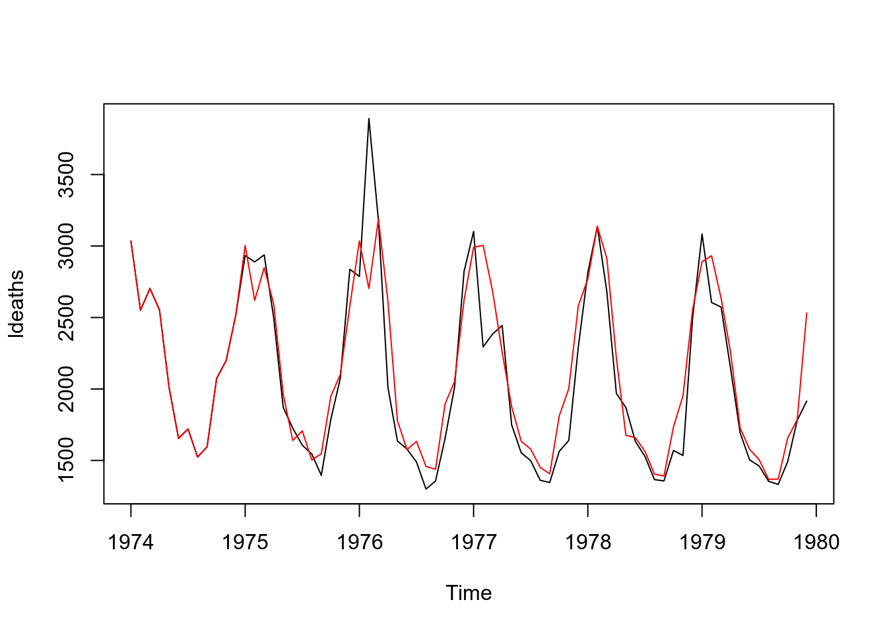
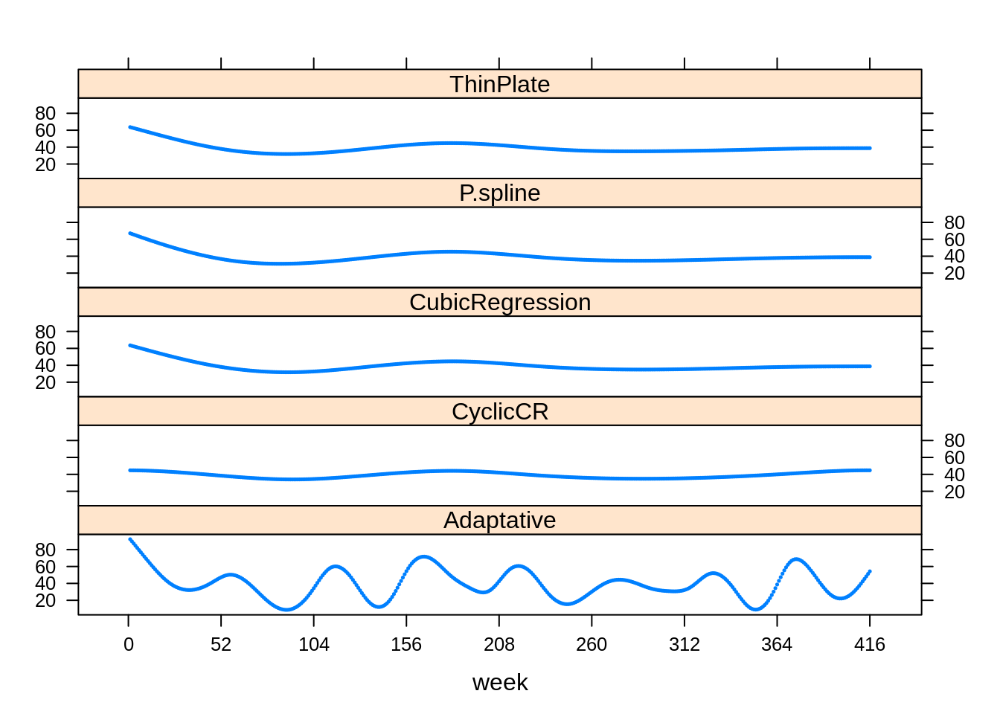
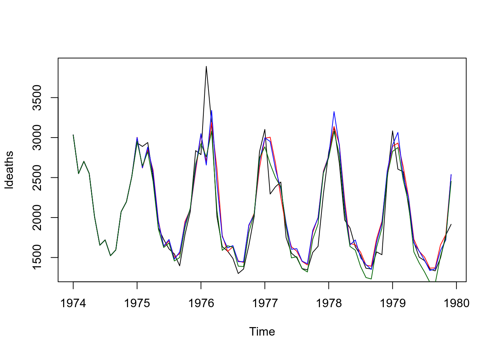

5 Modelagem em Séries Temporais
5.1 O que são os Modelos Box & Jenkins
A abordagem de Box-Jenkins à modelagem dos processos ARIMA foi descrita num livro publicado por George Box e Gwilym Jenkins em 1970.
BOX, G.E.P. and G.M. JENKINS (1970)
Time series analysis: Forecasting and control, San Francisco: Holden-Day.A abordagem Box-Jenkins envolve a identificação de um processo ARIMA (Modelos autorregressivos, integrados e de médias móveis) adequado, ajustando-o aos dados e, uma vez ajustados permite também utilizar esses modelos para a descição e/ou previsão (forecast).
Uma das características atraentes da abordagem Box-Jenkins é que os processos ARIMA são uma classe muito rica de modelos e geralmente é possível encontrar um modelo que forneça uma descrição adequada dos dados. Ajustam simultaneamente tendência, sazonalidade, ciclicidade e estrutura de dependência serial.
A dependência serial é a influência que um dado evento no tempo recebe de pontos anteriores.
O processo de modelagem B&J é feito em um ciclo iterativo de 3 estágios (repetido até o ajuste do modelo mais adequado):
Identificação - análise exploratória, baseada em gráficos dos dados brutos, autocorrelação, autocorrelação parcial, buscando identificar o tipo de modelo + adequado;
Estimação - estimativa de termos e parâmetros e seleção do “melhor modelo”;
Diagnóstico - critérios de ajuste, parcimônia.
5.2 Alguns processos estocásticos
- Processo aleatório (ruido branco): seqüência de variáveis aleatórias (\(a_t\)) que são mutuamente independentes e identicamente distribuídas. Possui média e variância constantes e os coeficientes de autocorrelação são iguais a:
\[ \rho_{h} = \left\{ \begin{array}{rc} 1, &\mbox{se} \quad h = 0, \\ 0 , &\mbox{se} \quad h = \pm 1, \pm 2, ... \end{array}\right.\]
Passeio aleatório (random walk): Denomina-se passeio aleatório quando a variável aleatória \(Z_t\) é igual à \(Z_{t-1}\) mais um erro aleatório \(\rightarrow\) \(Z_t = Z_{t-1} + a_t\).
- Quando \(t = 0 \rightarrow Z_1 = a_1\), logo \[Z_t = \sum_{t}^{i=1} a_i\]
5.3 Modelo ARIMA
Na análise de séries temporais, um Modelo Autoregressivo Integrado de Médias Móveis (Autoregressive Integrated Moving Average ou ARIMA, na sigla em inglês) é uma generalização de um modelo Autoregressivo de Médias Móveis (ARMA). Ambos os modelos são ajustados aos dados da série temporal para entender melhor os dados ou para prever pontos futuros na série. Modelos ARIMA são aplicados em alguns casos em que os dados mostram evidências de não estacionariedade, em que um passo inicial de diferenciação (correspondente à parte “integrada” do modelo) pode ser aplicado uma ou mais vezes para eliminar a não estacionariedade.
Temos então:
AR (Autoregressivo): avalia a relação entre os períodos (lags) através da autocorrelação, ou seja, indica que a variável de interesse é “regressada” em seus próprios valores defasados, isto é, anteriores. O objetivo de desse modelo e extrair essa influência.
I (Integrated): Aplica a diferenciação, se necessária, ou seja, indica que os valores de dados foram substituídos com a diferença entre seus valores. E os valores anteriores e este processo diferenciador pode ter sido realizado mais de uma vez.
MA – Moving Average: Indica que o erro de regressão é na verdade uma combinação linear dos termos de erro, cujos valores ocorreram contemporaneamente e em vários momentos no passado, ou seja, avalia os erros entre períodos e extrai estes erros (não tem relação com MA usados para suavização da ST).

p é a ordem (número de defasagens) do modelo autorregressivo;
d é o grau de diferenciação (o número de vezes em que os dados tiveram valores passados subtraídos);
q é a ordem do modelo de média móvel.
Exemplos:
| Parâmetro | Descrição |
|---|---|
| \(p = 1\) | Significa que uma determinada observação pode ser explicada pela observação prévia + erro |
| \(p = 2\) | Significa que uma determinada observação pode ser explicada por duas observações prévias + erro |
| \(d = 0\) | Significa que não é aplicada a diferenciação |
| \(d = 1\) | Significa que será aplicada diferenciação de primeira ordem |
| \(d = 2\) | Significa que será aplicada diferenciação de segunda ordem |
| \(q = 1\) | Significa que uma determinada observação pode ser explicada pelo erro da observação prévia |
| \(q = 2\) | Significa que uma determinada observação pode ser explicada pelo erro de duas observações prévias |
| ARIMA | Descrição |
|---|---|
| AR(1) ou ARIMA(1,0,0) | Apenas elemento autoregressivo , de \(1^{a}\) ordem |
| AR(2) ou ARIMA(2,0,0) | Apenas elemento autoregressivo , de \(2^{a}\) ordem |
| MA(1) ou ARIMA(0,0,1) | Apenas Média Móvel |
| ARMA(1,1) | Autorregressão e média móvel de \(1^{a}\) ordem |
5.3.1 Modelo Autoregressivo de ordem p - AR(p) ou ARIMA(p,0,0)
Supondo que a variável aleatória \(z_t\) é linearmente correlacionada com seus próprios valores defasados, este é um modelo autoregressivo geral de ordem p.
\[Z_t = c + \phi_1 Z_{t-1} + \phi_2 Z_{t-2} + ... + \phi_p Z_{t-p} + a_t\] , sendo \(t=1,2,...,p\)
O objetivo é estimar:
a constante c - média do processo ou intercepto
a ordem p do modelo - até onde vai a dependência
os parâmetros \(\phi\) de cada termo - peso de cada ponto passado na determinação do ponto t
Para estimar os parâmetros \(\phi\) de um AR, a estacionariedade de \(1^a\) e \(2^a\) ordens são fundamentais !!!
| Processo | Modelo |
|---|---|
| AR(1) | \[Z_t = c + \phi_1 Z_{t-1} + a_t\] |
| AR(2) | \[Z_t = c + \phi_1 Z_{t-1} + \phi_2 Z_{t-2} + a_t\] |
| \(\dots\) | \(\dots\) |
| AR(p) | \[Z_t = c + \phi_1 Z_{t-1} + \phi_2 Z_{t-2} + ... + \phi_p Z_{t-p} + a_t\] |
5.3.2 Condições de estacionariedade
Uma série é estacionária quando suas propriedades não variam ao longo do tempo. Em um processo AR, a estacionariedade se reflete na estimação dos parâmetros:
No caso AR(1) basta que \(|\phi_1| < 1\) para que o processo seja estacionário.
No caso AR(2):
\(|\phi_2|< 1\)
\(\phi_2 + \phi_1 < 1\)
\(\phi_2 - \phi_1 < 1\)
5.3.3 Modelo de Médias Móveis de ordem q - MA(q) ou ARIMA(0,0,q)
Independente do processo autoregressivo, cada elemento da série pode também ser afetado pelo erro passado - processo “Médias Móveis”. Neste caso, o valor de \(Z\) depende de valores do componente aleatório em pontos anteriores (usa-se a denominação choque aleatório).
\[Z_t = C + a_t - \theta_1 a_{t-1} - \theta_2 a_{t-2} - ... - \theta_p a_{t-q}\]
Por convenção os termos em a são escritos com sinais negativos
Cada observação é a soma de um componente aleatório \(a_t\) e uma combinação dos componentes aleatórios anteriores.
O modelo pode ser escrito baseado nas defasagens (informações passadas) do ruído branco
| Processo | Modelo |
|---|---|
| MA(1) | \[Z_t = c + a_t - \theta_1 a_{t-1}\] |
| MA(2) | \[Z_t = c + a_t - \theta_1 a_{t-1} - \theta_2 a_{t-2}\] |
| \(\dots\) | \(\dots\) |
| MA(q) | \[Z_t = c + a_t - \theta_1 a_{t-1} - \theta_2 a_{t-2} - ... - \theta_p a_{t-q} + a_t\] |
5.3.4 Condições de invertibilidade
No modelo MA não há restrição sobre os \(\theta\)’s para que o processo seja estacionário, mas é necessário garantir a invertibilidade.
Existe uma dualidade entre processos médias móveis e autoregressivo, onde a equação de MA pode ser reescrita na forma AR (de ordem infinita). Se isso for possível, podemos dizer que o processo é invertível, ou seja, se puder utilizar um AR(p) para explicar um MA(q).
Mas, para isso algumas condições devem ser satisfeitas:
No caso MA(1) basta que \(|\theta| < 1\) para que o processo é invertível.
No caso MA(2):
\(|\theta_2|< 1\)
\(\theta_2 + \theta_1 < 1\)
\(\theta_2 - \theta_1 < 1\)
5.3.5 Modelo Autorregressivo de Médias Móveis de ordem p e q - ARMA(p,q) ou ARIMA(p,0,q)
A importância de um modelo ARMA está no fato de poder descrever uma série estacionária por um modelo que envolve menos parâmetros que um MA puro ou um AR puro.
\[Z_t = c + \phi_1 Z_{t-1} + \phi_2 Z_{t-2} + ... + \phi_p Z_{t-p} + a_t - \theta_1 a_{t-1} - \theta_2 a_{t-2} - ... - \theta_p a_{t-q}\]
Cada observação é definida por combinação linear de observações anteriores e combinação de componentes aleatórios anteriores.
Neste modelo misto, as duas condições - estacionariedade e invertibilidade - são necessárias
| Processo | Modelo |
|---|---|
| ARMA(1) | \[Z_t = c + \phi_1 Z_{t-1} + a_t - \theta_1 a_{t-1}\] |
| ARMA(2) | \[Z_t = c + \phi_1 Z_{t-1} + \phi_2 Z_{t-2} + a_t - \theta_1 a_{t-1} - \theta_2 a_{t-2}\] |
| \(\dots\) | \(\dots\) |
| ARMA(q) | \[Z_t = c + \phi_1 Z_{t-1} + \phi_2 Z_{t-2} + ... + \phi_p Z_{t-p} + a_t - \theta_1 a_{t-1} - \theta_2 a_{t-2} - ... - \theta_p a_{t-q}\] |
- No caso ARMA(1,1), o processo será estacionário se \(|\phi_1| < 1\) e \(|\theta_1| < 1\), respectivamente.
5.3.6 Modelo Autorregressivo Integrado de Médias Móveis de ordem p, d e q - ARIMA(p,d,q)
Neste modelo se utiliza o método de diferenças para obter a estacionariedade da série. Também chamado de operador de deslocamento (backshift)
\[W_t = \bigtriangledown Z_t = (1-B)Z_t = Z_t - Z_{t-1}\]
O modelo então passa a ser:
\[W_t = \phi_1 W_{t-1} + ... + \phi_p W_{t-p} + a_t - \theta_1 a_{t-1} - ... - \theta_q a_{t-q}\]
\[\phi(B)W_t = \theta(B)a_t\]
\[\phi(B)(1-B)^d Z_t = \theta(B)a_t\]
Assim, se a série for estacionária, podemos representá-la por um modelo ARMA(p,q).
A figura abaixo mostra a série não estacionária antes e após diferenciação - \(d(1)\)

A figura abaixo mostra ACF antes e após diferenciação

5.3.7 Modelos ARIMA não sazonais
Resumindo, os modelos ARIMA não sazonais são geralmente denotados como ARIMA(p,d,q), em que os parâmetros p,d,q são números inteiros não negativos.
Robusto: Pode ser usado em praticamente qualquer tipo de ST
Dados estáveis, com poucos outliers
Requer dados estacionários: pode ser transformada usando diferenciação: remove tendências
Subtrai a observação do período atual do período anterior
A diferenciação pode ser feita 1x: diferenciação de primeira ordem
Ou pode ser necessário uma segunda vez: diferenciação de segunda ordem (mais raro)
5.4 Modelos ARIMA sazonais (SARIMA) - ARIMA(p,d,q)(P,D,Q)_{m}
- Em epidemiologia é comum haver sazonalidade. Ou seja, considerando medidas mensais, pode-se esperar que a série dependa também dos termos \(Z_{t-12}\) e talvez \(Z_{t-24}\).
\[\phi(B) \Phi(B^s)\bigtriangledown_{s}^{D} \bigtriangledown^{d}Z_t = C + \theta(B) \Theta(B^s) a_t\]
\
| \(\phi(B) \Phi(B^s)\bigtriangledown_{s}^{D} \bigtriangledown^{d}Z_t\) | \(C + \theta(B) \Theta(B^s) a_t\) |
|---|---|
| AR(p) backshift x AR(P) sazonal backshift sazonal x diferenciação sazonal x diferenciação x tendência \(Z_t\) | Média do processo + MA(q) backshift x MA(Q) sazonal backshift sazonal x erro aleatório |
São geralmente denotados como \(ARIMA(p,d,q)(P,D,Q)_{m}\), em que:
m se refere ao número de períodos em cada temporada;
P, D e Q se referem aos termos de auto-regressão, diferenciação e média móvel para a parte sazonal do modelo ARIMA.
5.5 Função de Autocorrelação Parcial (FACP) - (Partial Autocorrelation Function - PACF)
- A correlação medida diretamente em \(t-1\), \(t-2\) até \(t-p\) é a função de autocorrelação.
Uma outra ferramenta utilizada no processo de identificação do modelo é a Função de Autocorrelação Parcial(FACP). Esta medida corresponde a correlação de $Z_t $ e $ Z_{t-h} $ removendo o efeito dos pontos intermediários \(Z_{t-1}, Z_{t-2}, \dots , Z_{t-h+1}\) e é denotada por \(\rho_{h}\), ou seja, é a correlação da série temporal com um atraso de si mesmo, com a dependência linear de todos os desfasamentos entre eles removidos.
\[\rho_{kk} = Corr(X_t, X_{t-l}|X_{t-1}, X_{t-2},\dots,X_{t-h+1})\]
Segue abaixo um exemplo um exemplo de ACF, com já vimos anteriormente, e do PACF. Observe que há duas linhas horizontais que representam os limites do teste de significância sendo que valores acima ou abaixo da linha são estatisticamente significantes.

No \(lag = 1\), a ACF e a PACF são iguais.
Na PACF somente existe correlação até o lag igual a ordem do modelo AR - ex: modelo de ordem 3 somente apresenta valores de PACF até o \(3^a\) lag.
A forma gráfica do ACF e PACF servem para definir valores de p e q. Olhando para os correlogramas, podemos determinar que tipo de modelo selecionar e quais serão os valores de p, d e q.
| Modelo | Padrão do ACF | Padrão do PACF |
|---|---|---|
| AR(p) | Decaimento exponencial ou padrão de onda senoidal amortecida ou ambos | Picos significantes através de primeiros lags |
| MA(q) | Picos significantes através de primeiros lags | Decaimento exponencial ou padrão em forma de senoides |
| ARMA(1,1) | Decaimento exponencial a partir do lag 1 | Decaimento exponencial a partir do lag 1 |
| ARMA(p,q) | Decaimento exponencial | Decaimento exonencial |
5.6 Processo de Modelagem
Para a construção do modelo podemos seguir o seguinte roteiro no qual a escolha da estrutura do modelo é baseado nos próprios dados:
Identifica-se um modelo com base na análise de autocorrelações, autocorrelações parciais e outros critérios;
Estima-se os parâmetros do modelo identificado;
Verificar se o modelo ajustado é adequado aos dados através de uma análise de resíduos.
Caso o modelo não seja adequado o roteiro é repetido, voltando à fase de identificação do modelo.
Como definir valores de p,d e q ?
p: ordem da parte autoregressiva - PACF
d: grau de diferenciação – Teste de Estacionariedade
q: ordem da média móvel - ACF

5.7 Processo de Identificação
Esse processo pode ser extremamente difícil, mesmo para experientes. E Nem sempre o modelo mais sugestivo é o melhor.
Existem vários critérios para identificação de um modelo, por isso, é possível identificar modelos diferentes dependendo do critério que foi escolhido para identificação.
Testar todas as combinações possíveis dos parâmetros \(p,d,q\) do modelo ARIMA, seria uma boa ideia, mas isso pode ser um pouco demorado se for feito de forma manual.
5.7.1 Simulando os dados das ST com estruturas ARIMA
Simulando um processo AR(1)
# Simulando 100 observações através de um processo AR(1) com média 30
ar.sim<-arima.sim(model=list(ar=.9),n=200, mean = 30)
# Construindo o gráfico de ST
ts.plot(ar.sim) 
# ACF e PACF
par(mfrow=c(1,2))
ar.acf <- acf(ar.sim,type="correlation",plot=T)
ar.pacf <- acf(ar.sim,type="partial",plot=T)
plot(ar.acf)
plot(ar.pacf)
Simulando um processo AR(2)
# Simulando 100 observações através de um processo AR(2) com média 30
ar.sim <- arima.sim(model=list(ar=c(.9,-.2)),n=200, mean = 30)
# Construindo o gráfico de ST
ts.plot(ar.sim) 
# ACF e PACF
par(mfrow=c(1,2))
ar.acf <- acf(ar.sim,type="correlation",plot=T)
ar.pacf <- acf(ar.sim,type="partial",plot=T)
plot(ar.acf)
plot(ar.pacf)
Simulando um processo MA(2)
# Simulando 200 observações através de um processo MA(2) com média 30
ma.sim <- arima.sim(model=list(ma=c(-.7,.1)),n=200, mean = 30)
# Construindo o gráfico de ST
ts.plot(ma.sim) 
# ACF e PACF
par(mfrow=c(1,2))
ma.acf <- acf(ma.sim,type="correlation",plot=T)
ma.pacf <- acf(ma.sim,type="partial",plot=T)
plot(ma.acf)
plot(ma.pacf)
Simulando um processo ARMA(2,2)
# Simulando 200 observações através de um processo ARMA(2,2) com média 30
arma.sim <-arima.sim(model=list(ar=c(.9,-.2),ma=c(-.7,.1)),n=200, mean = 30)
# Construindo o gráfico de ST
ts.plot(arma.sim) 
# ACF e PACF
par(mfrow=c(1,2))
arma.acf <- acf(arma.sim,type="correlation",plot=T)
arma.pacf <- acf(arma.sim,type="partial",plot=T)
plot(arma.acf)
plot(arma.pacf)
5.8 Métricas para avaliar a qualidade do ajuste
- Para determinar a ordem de um modelo ARIMA não sazonal, um critério útil é o critério de informação de Akaike (AIC).
\[AIC = - 2log(L) + 2(p+q+k+1)\]
em que L é verossimilhança dos dados, p é a ordem da parte autoregressiva e q é a ordem da parte de média móvel. O parâmetro k neste critério é definido como o número de parâmetros no modelo sendo ajustado aos dados.
- O AIC corrigido para modelos ARIMA (AICc) pode ser escrito como:
\[AICc = AIC + \dfrac{2(p+q+k+1)(p+q+k+2)}{T-p-q-k-2}\]
O critério de informação bayesiano (BIC) pode ser escrito como:
\[BIC = AIC + (log(n) - 2) (p+q+k+1)\]
O objetivo é o minimizar os valores de AIC, AICc e BIC para um bom modelo. Quanto menor o valor de um destes critérios para uma gama de modelos investigados, melhor o modelo se adequará aos dados.
O AICc pode ser usado apenas para comparar modelos ARIMA com as mesmas ordens de diferenciação. Para modelos ARIMA como ordens distintas de diferenciação, a raiz do erro quadrático médio pode ser usada para comparação de modelos.
A abordagem do BIC penaliza mais intensamente os modelos por levar em consideração o \(n\).
5.9 Análise de Resíduos
Se o modelo está correto, as nossas suposições iniciais feitas para os resíduos devem ser satisfeitas, isto é, \(a_t \sim N(0, \sigma^{2}_{a})\) e independentes.
Assim, a análise de resíduos é feita da seguinte forma:
Faz-se um gráfico da série \(a_t\) e observa-se a sua estacionariedade e se sua média é igual a zero (aproximadamente).
Se a série \(a_t\) for estacionária, calcula-se suas funções de autocorrelação e autocorrelação parcial amostral;
Se as funções em (2) indicarem que o processo gerador de \(a_t\) é um ruído branco, o modelo escolhido para \(Y_t\) poderá ser ser considerado adequado. Senão, podemos utilizar a análise dos resíduos para identificar outro modelo para a série.
Lembrando que o processo \(a_t\) é um ruído branco se:
\(E(a_t) = 0\),
\(a_t \sim N(0, \sigma^2_a)\),
\(Cov(a_t, a_{t-h}) = 0\), \(\forall h \neq 0\) (Não correlacionados)
5.10 Ajuste manual de modelo ARIMA

##
## Ljung-Box test
##
## data: Residuals from ARIMA(1,0,0)(1,1,1)[12]
## Q* = 11, df = 11, p-value = 0.5
##
## Model df: 3. Total lags used: 145.11 Ajuste automático de modelos ARIMA
O pacote forecast de autoria Rob Hyndman e colaboradores possui diversas funções para visualização, analise e predições de Series temporais, entre elas existe uma função que faz ajustes automáticos para modelos ARIMA. Essa função se chama auto.arima()
Testa diferentes combinações de \(p\), \(d\) e \(q\) buscando o melhor ajuste
Extremamente flexível
Mesmo intuindo um modelo, você pode usa-la para confirmar sua parametrização
Alguns parâmetros importantes da função auto.arima()
stationary - Se TRUE, restringe sua busca por modelos estacionários.
seasonal - Se FALSE, restringe sua busca por modelos não sazonais.
stepwise - Se TRUE, utilizará o métodos de stepwise de seleção (mais rápido). Caso contrário, irá buscar todas as combinações. O método de seleção non-stepwise pode ser muito lento, especialmente para os modelos sazonais.
trace - Se TRUE, a lista de modelos ARIMA considerados será reportada.
approximation - Se TRUE, o processo de estimação é feito através das somas dos quadrados condicionais e os critérios de informação utilizados para a seleção de modelos são aproximados. O modelo final ainda é calculado usando estimativa de máxima verossimilhança. A aproximação deve ser usada para séries temporais longas ou um período sazonal elevado para evitar tempos de computação excessivos.
# tilizando trace = T, será possível verificar todo o processo de criação e teste dos modelos
modelo1 <- auto.arima(ldeaths, trace = F, allowdrift=F)
# Neste modelo, será feito uma busca maior para uma solução "mais ótimizada"
modelo2 <- auto.arima(ldeaths, trace = F, stepwise = F, approximation = F)Vamos verificar cada um dos modelos obtidos
Series: ldeaths
ARIMA(0,0,1)(2,1,0)[12]
Coefficients:
ma1 sar1 sar2
0.427 -0.860 -0.361
s.e. 0.138 0.143 0.145
sigma^2 estimated as 70422: log likelihood=-423.3
AIC=854.6 AICc=855.3 BIC=863
Series: ldeaths
ARIMA(2,0,0)(0,1,2)[12] with drift
Coefficients:
ar1 ar2 sma1 sma2 drift
0.255 -0.339 -1.163 0.357 -5.334
s.e. 0.134 0.140 0.362 0.205 0.905
sigma^2 estimated as 49449: log likelihood=-416.4
AIC=844.8 AICc=846.4 BIC=857.4Comparando os ajustes dos modelos

5.12 Modelos de Previsão
Uma vez ajustado um modelo ARIMA a uma série de tempo é possível fazer uma predição de \(K\) passos a frente o que nos permite
obter a previsão da série no instante \(t + k\) será denotada por $_{t+k} $ assim podemos obter alem das previsões futuras os limites de confiança.
Os Modelos de Previsão são uma área importante e um campo muito ativo de desenvolvimento de métodos estatísticos e computacionais, aqui vamos somente apresentar um exemplo utilizando um dos modelos já ajustados para a serie ldeaths.
Uma maneira simples de obter o valor predito é usando a função predict()
## $pred
## Jan Feb Mar Apr May Jun Jul Aug Sep Oct Nov Dec
## 1980 2690 2758 2558 2165 1801 1586 1508 1363 1350 1557 1607 2339
##
## $se
## Jan Feb Mar Apr May Jun Jul Aug Sep Oct Nov Dec
## 1980 265.4 288.5 288.5 288.5 288.5 288.5 288.5 288.5 288.5 288.5 288.5 288.5o pacote forecast possui funções para facilitar a predição e visualização. Veja na função abaixo que o modelo já retorna não só o valor predito mas os limites superior e inferior para os níveis de confiança 80 e 95.
## Point Forecast Lo 80 Hi 80 Lo 95 Hi 95
## Jan 1980 2690 2350.3 3030 2170.2 3210
## Feb 1980 2758 2387.9 3127 2192.2 3323
## Mar 1980 2558 2188.1 2928 1992.4 3123
## Apr 1980 2165 1795.3 2535 1599.5 2731
## May 1980 1801 1431.3 2171 1235.5 2367
## Jun 1980 1586 1216.6 1956 1020.8 2152
## Jul 1980 1508 1138.5 1878 942.7 2074
## Aug 1980 1363 992.7 1732 797.0 1928
## Sep 1980 1350 979.9 1719 784.1 1915
## Oct 1980 1557 1187.1 1927 991.4 2122
## Nov 1980 1607 1237.7 1977 1042.0 2173
## Dec 1980 2339 1968.8 2708 1773.0 2904Ele também facilita a confecção de gráficos

Para saber mais sobre séries temporais e previsões recomendamos o exelente livro online Forecasting: Principles and Practice Rob J Hyndman and George Athanasopoulos
5.13 Correlação Cruzada (Cross-Corralation)
Vamos considerar a situação em que temos duas ou mais séries temporais e queremos explorar as relações entre elas. A ideia seria modelar a série \(Z_{t}^{1}\) usando os pontos anteriores de \(Z_{t}^{2}\).
A correlação cruzada descreve o grau de correlação entre duas séries.
A correlação cruzada, mais especificamente, é usado para determinar quando uma mudança em um série pode potencializar a causa da mudança na outra série.
\[Z_{t} = v(B) X_t + N_t\] onde:
- \(v(B)\) é a função de transferência (filtro)
- \(Z_t,X_t\) são séries estacionarias
\(N_t\) é um ruído independente de \(X_t\)
Vamos analisar:
O atraso de uma série em relação a outra
O feedback
Correlação dos resíduos, removida a estrutura temporal
A titulo de demostração da função de correlação cruzada (Cross-correlation Function), vamos usar como exemplo dados de temperatura da área central Reino Unido obtidos do UK Met Office e vamos correlacionar com a serie ldeaths .
## [,1] [,2]
## [1,] -1.25000 -0.1859
## [2,] -1.16667 -0.4816
## [3,] -1.08333 -0.6586
## [4,] -1.00000 -0.6518
## [5,] -0.91667 -0.4912
## [6,] -0.83333 -0.1953
## [7,] -0.75000 0.1562
## [8,] -0.66667 0.5214
## [9,] -0.58333 0.7748
## [10,] -0.50000 0.8002
## [11,] -0.41667 0.5991
## [12,] -0.33333 0.2354
## [13,] -0.25000 -0.1907
## [14,] -0.16667 -0.5479
## [15,] -0.08333 -0.7891
## [16,] 0.00000 -0.8320
## [17,] 0.08333 -0.6264
## [18,] 0.16667 -0.2453
## [19,] 0.25000 0.1974
## [20,] 0.33333 0.5818
## [21,] 0.41667 0.8115
## [22,] 0.50000 0.8207
## [23,] 0.58333 0.6039
## [24,] 0.66667 0.2426
## [25,] 0.75000 -0.1756
## [26,] 0.83333 -0.5441
## [27,] 0.91667 -0.7285
## [28,] 1.00000 -0.7110
## [29,] 1.08333 -0.5332
## [30,] 1.16667 -0.2181
## [31,] 1.25000 0.1562## [1] 0.8325.14 GAM (generalized Additive Models)
- Um modelo aditivo generalizado (Hastie and Tibishirani, 1990) é um modelo linear generalizado com um preditor linear envolvendo a soma de funções suavizadas das covariáveis + os efeitos fixos das mesmas.
\[\eta = \sum X \beta + f_1(x_{1i}) + f_2(x_{2i}) + \ldots\]
Pode ser considerado uma extensão do GLM, onde o preditor linear \(\eta = E(Y_i)\) não é limitado para a regressão linear, sendo \(Y_i \sim\) alguma distribuição da família exponencial.
\(Y_i\) é a variável resposta (desfecho)
\(X\) é o vetor das variáveis explicativas (exposição)
\(\beta\) representa o vetor de parâmetros a serem estimados pelo modelo.
O modelo inclui qualquer função das covariáveis independentes (\(x_i\))
\(f(x) \rightarrow\) pode ser uma função não-paramétrica, cuja forma não é especificada a priori. Mas pode ser estimada através de curvas de alisamento (ex: kernel, loess, splines, etc.)
A curva alisada permite descrever a forma e revelar possíveis não linearidades nas relações estudadas, uma vez que não apresenta a estrutura rígida de uma função paramétrica, como nos GLM’s.
Quando usar ? Quando o efeito da covariável muda dependendo do seu valor
5.15 Por que não usar ?
Os modelos estatísticos visam explicar os dados observados, não simplesmente reproduzi-lo \(\rightarrow\) overfitting
Modelos paramétricos em geral são melhores para estimar erros padrão ou intervalos de confiança
Modelos paramétricos são mais eficientes, se corretamente especificados (menor número de observações)
5.16 GAM em Séries Temporais
A idéia principal é modelar o efeito de covariáveis em alguns eventos de saúde ao longo do tempo
Razões:
Permitir a inclusão da dependência do tempo
Relação não-linear
Tendência e sazonalidade podem ser facilmente incorporadas
Considerando a variável resposta uma contagem, as escolhas para as distribuições são:
Poisson: \(\lambda\) \(=\) valores esperados e \(=\) variância \(\rightarrow\) superdispersão
Quasipoisson: não é uma distribuição, mas uma maneira de relaxar suposição do modelo anterior e levar em consideração a superdispersão. (Não estima o AIC automaticamente).
Negative Binomial: tem uma média \(\mu\), um parâmetro de escala \(\theta\) e a variância como a função \(V(\mu)=\mu+\mu^2/\theta\)
Modelos com inflação zero: modelos de mistura que combinam uma massa pontual a zero com uma distribuição de contagem como Poisson, geométrica ou binomial negativa
5.16.1 Exemplo de um modelo GAM
- Vamos utilizar uma a série temporal dos casos de leptospirose com as variáveis de esposição total de chuva e temperatura.
\[\text{Lepto}(t) = \text{rain}(t-?) + \text{humidity}(t-?) + AR(t,t-1) + trend + seasonality + \varepsilon\]
Tendência e Sazonalidade \(\to\) função suavizadora
Covariáveis \(\to\) lag no tempo
É possível incluir a variabilidade populacional em risco (offset)
5.16.2 Exemplo: Série Temporal: Casos de Leptospirose vs Clima
lepto <- read.csv2("https://gitlab.procc.fiocruz.br/oswaldo/eco2019/raw/master/dados/leptoruido.csv", header=T)
dia <- read.table("https://gitlab.procc.fiocruz.br/oswaldo/eco2019/raw/master/dados/climadia.dat", header=T)
library(lattice)
library(car)
library(sm)
library(survival)
library(mgcv)
#XY condicionado
xyplot(cases + totrain + tempmed ~ week,
outer=TRUE, layout=c(1, 3), pch=1, type="l",ylab="",
scales=list(x=list(relation='same'), y=list(relation='free')),
data=lepto)
- Modelando a Chuva como resposta e colocando o a função suavizadoras para capturar o efeito nas semanas epidemológicas
xyplot(totrain ~ week,
outer=TRUE, layout=c(1, 1), pch=1, type="l",ylab="Chuva",
scales=list(x=list(relation='same'), y=list(relation='free')),
data=lepto)
# Ajustando a chuva como resposta
rain.tp <- gam(totrain ~ s(week,bs="tp"), data=lepto )
rain.ps <- gam(totrain ~ s(week,bs="ps"), data=lepto ) #
rain.cc <- gam(totrain ~ s(week,bs="cc"), data=lepto ) #
rain.cr <- gam(totrain ~ s(week,bs="cr"), data=lepto ) #
rain.ad <- gam(totrain ~ s(week,bs="ad"), data=lepto )
ThinPlate <- predict(rain.tp)
P.spline <- predict(rain.ps)
CubicRegression <- predict(rain.cr)
CyclicCR <- predict(rain.cc)
Adaptative <- predict(rain.ad)
xyplot(Adaptative +CyclicCR + CubicRegression+P.spline + ThinPlate~ week,
outer=TRUE, layout=c(1, 5), pch=19, cex=.2, ylab="",
scales=list(x=list(at=seq(0,416,52),relation='same'), y=list(relation="same")), data=lepto)
- Uma outra forma de representar o efeito da chuva
par(mfrow=c(5,1),mai=c(0.2,0.5412 ,0.5412,0.05),mgp=c(2,.5,0))
plot(rain.tp,shade=TRUE,ylab="TP",xlab="",residuals=F,xaxp=c(0,416,8),main="Chuva", pch=19, cex=.2, xaxt="n")
plot(rain.ps,shade=TRUE,main="",ylab="PS",xlab="",residuals=F,xaxp=c(0,416,8), pch=19, cex=.2, xaxt="n")
plot(rain.cr,shade=TRUE,main="",ylab="CC",xlab="",residuals=F,xaxp=c(0,416,8), pch=19, cex=.2, xaxt="n")
plot(rain.cc,shade=TRUE,main="",ylab="CC",xlab="",residuals=F,xaxp=c(0,416,8), pch=19, cex=.2, xaxt="n")
plot(rain.ad,shade=TRUE,main="",ylab="Adaptative",xlab="",residuals=F,xaxp=c(0,416,8), pch=19, cex=.2)
- Série da temperatura (ThinPlate - tp, P.spline - ps, CubicRegression - cc)
temp.tp <- gam(tempmed ~ s(week,bs="tp",k=52), data=lepto)
temp.ps <- gam(tempmed ~ s(week,bs="ps",k=52), data=lepto )
temp.cc <- gam(tempmed ~ s(week,bs="cc",k=52), data=lepto )
par(mfrow=c(3,1),mai=c(0.05,0.5412 ,0.5412,0.05),mgp=c(2,1,0))
plot(temp.tp,shade=TRUE,ylab="TP",xlab="",xaxp=c(0,416,8) , main="Temperatura", cex=2)
plot(temp.ps,shade=TRUE,main="",ylab="PS",xlab="",xaxp=c(0,416,8), cex=2)
plot(temp.cc,shade=TRUE,main="",ylab="CC",xlab="",xaxp=c(0,416,8), cex=2)
- Série dos casos de leptospirose (ThinPlate - tp, P.spline - ps, CubicRegression - cc)
cases.tp <- gam(cases ~ s(week,bs="tp",k=52), data=lepto ) #ciclica
cases.ps <- gam(cases ~ s(week,bs="ps",k=52), data=lepto ) #
cases.cc <- gam(cases ~ s(week,bs="cc",k=52), data=lepto)
par(mfrow=c(3,1),mai=c(0.05,0.5412 ,0.5412,0.05),mgp=c(2,1,0))
plot(cases.tp,shade=TRUE,ylab="TP",xlab="",xaxp=c(0,416,8), main="Casos", cex=2)
plot(cases.ps,shade=TRUE,main="",ylab="PS",xlab="",xaxp=c(0,416,8), cex=2)
plot(cases.cc,shade=TRUE,main="",ylab="CC",xlab="",xaxp=c(0,416,8), cex=2)- Ajustando a série dos casos de leptospirose via distribuição Poisson
library(quantmod) # para utilizar a funcao Lag
chuvl0 <- gam(cases ~ s(totrain) ,family=poisson,data=subset(lepto, week>5))
chuvl1 <- gam(cases ~ s(Lag(totrain,1)),family=poisson,data=subset(lepto, week>5))
chuvl2 <- gam(cases ~ s(Lag(totrain,2)),family=poisson,data=subset(lepto, week>5))
chuvl3 <- gam(cases ~ s(Lag(totrain,3)),family=poisson,data=subset(lepto, week>5))
chuvl4 <- gam(cases ~ s(Lag(totrain,4)),family=poisson,data=subset(lepto, week>5))
chuvl5 <- gam(cases ~ s(Lag(totrain,5)),family=poisson,data=subset(lepto, week>5))
AIC(chuvl0,chuvl1,chuvl2,chuvl3,chuvl4,chuvl5) df AICchuvl0 8.977 2856 chuvl1 9.675 2426 chuvl2 9.717 2380 chuvl3 8.406 2684 chuvl4 9.669 2661 chuvl5 9.602 2717
- Ajustando a série dos casos de leptospirose via distribuição Binomial Negativa
chuvnb0 <- gam(cases ~ s(Lag(totrain,0)),data=lepto, family=nb(), subset=week>5)
chuvnb1 <- gam(cases ~ s(Lag(totrain,1)),data=lepto, family=nb(), subset=week>5)
chuvnb2 <- gam(cases ~ s(Lag(totrain,2)),data=lepto, family=nb(), subset=week>5)
chuvnb3 <- gam(cases ~ s(Lag(totrain,3)),data=lepto, family=nb(), subset=week>5)
chuvnb4 <- gam(cases ~ s(Lag(totrain,4)),data=lepto, family=nb(), subset=week>5)
chuvnb5 <- gam(cases ~ s(Lag(totrain,5)),data=lepto, family=nb(), subset=week>5)
chuvnb5$family$getTheta()[1] 0.4864
df AICchuvnb0 7.996 2207 chuvnb1 7.976 2095 chuvnb2 6.860 2107 chuvnb3 7.356 2190 chuvnb4 8.085 2192 chuvnb5 7.119 2213
- Comparando os AIC’s de ambos os modelos entre os lags
plot(0:5,AIC(chuvl0,chuvl1,chuvl2,chuvl3,chuvl4,chuvl5)[,2], type="l",ylim=c(2090,2850), ylab="AIC's", xlab = "Lags")
lines(0:5,AIC(chuvnb0,chuvnb1,chuvnb2,chuvnb3,chuvnb4,chuvnb5)[,2], type="l",col=2)
legend("right",c("Poisson","Bin. Neg."),col=1:2,fill=1:2)
- Verificando a distribuição da chuva entre todos os lags

par(mfrow=c(3,2),mai=c(0.05,0.5412 ,0.5412,0.05),mgp=c(2,1,0))
plot(chuvnb0,ylab="Lag=0")
plot(chuvnb1,ylab="Lag=1")
plot(chuvnb2,ylab="Lag=2")
plot(chuvnb3,ylab="Lag=3")
plot(chuvnb4,ylab="Lag=4")
plot(chuvnb5,ylab="Lag=5")- Incluindo todos os lags no modelo GLM e verificando o Fator de Inflação de Variação (VIF)
casos.chuva.poi <- glm(cases ~ Lag(totrain,0) + Lag(totrain,1) + Lag(totrain,2) + Lag(totrain,3) + Lag(totrain,4)+Lag(totrain,5), family="poisson", data=lepto)
summary(casos.chuva.poi)##
## Call:
## glm(formula = cases ~ Lag(totrain, 0) + Lag(totrain, 1) + Lag(totrain,
## 2) + Lag(totrain, 3) + Lag(totrain, 4) + Lag(totrain, 5),
## family = "poisson", data = lepto)
##
## Deviance Residuals:
## Min 1Q Median 3Q Max
## -4.286 -1.287 -0.436 0.697 5.788
##
## Coefficients:
## Estimate Std. Error z value Pr(>|z|)
## (Intercept) 0.858920 0.042793 20.07 < 2e-16 ***
## Lag(totrain, 0) 0.000807 0.000449 1.80 0.07218 .
## Lag(totrain, 1) 0.005873 0.000342 17.18 < 2e-16 ***
## Lag(totrain, 2) 0.004609 0.000321 14.34 < 2e-16 ***
## Lag(totrain, 3) 0.001876 0.000386 4.86 1.2e-06 ***
## Lag(totrain, 4) 0.001571 0.000417 3.77 0.00017 ***
## Lag(totrain, 5) 0.001974 0.000409 4.82 1.4e-06 ***
## ---
## Signif. codes: 0 '***' 0.001 '**' 0.01 '*' 0.05 '.' 0.1 ' ' 1
##
## (Dispersion parameter for poisson family taken to be 1)
##
## Null deviance: 1762.8 on 410 degrees of freedom
## Residual deviance: 1053.7 on 404 degrees of freedom
## (5 observations deleted due to missingness)
## AIC: 2303
##
## Number of Fisher Scoring iterations: 5| Lag(totrain, 0) | Lag(totrain, 1) | Lag(totrain, 2) | Lag(totrain, 3) |
|---|---|---|---|
| 1.125 | 1.187 | 1.15 | 1.092 |
| Lag(totrain, 4) | Lag(totrain, 5) |
|---|---|
| 1.16 | 1.067 |
library(MASS) # Utilizar a funcao glm.nb
casos.chuva.nb <- glm.nb(cases ~ Lag(totrain,0) + Lag(totrain,1) + Lag(totrain,2) + Lag(totrain,3) + Lag(totrain,4)+Lag(totrain,5), data=lepto)
summary(casos.chuva.nb)##
## Call:
## glm.nb(formula = cases ~ Lag(totrain, 0) + Lag(totrain, 1) +
## Lag(totrain, 2) + Lag(totrain, 3) + Lag(totrain, 4) + Lag(totrain,
## 5), data = lepto, init.theta = 3.412395956, link = log)
##
## Deviance Residuals:
## Min 1Q Median 3Q Max
## -2.827 -0.848 -0.226 0.436 2.745
##
## Coefficients:
## Estimate Std. Error z value Pr(>|z|)
## (Intercept) 0.650005 0.070467 9.22 < 2e-16 ***
## Lag(totrain, 0) 0.000617 0.000787 0.78 0.43338
## Lag(totrain, 1) 0.007007 0.000740 9.46 < 2e-16 ***
## Lag(totrain, 2) 0.007010 0.000722 9.71 < 2e-16 ***
## Lag(totrain, 3) 0.001988 0.000750 2.65 0.00806 **
## Lag(totrain, 4) 0.002647 0.000754 3.51 0.00045 ***
## Lag(totrain, 5) 0.001775 0.000757 2.35 0.01902 *
## ---
## Signif. codes: 0 '***' 0.001 '**' 0.01 '*' 0.05 '.' 0.1 ' ' 1
##
## (Dispersion parameter for Negative Binomial(3.412) family taken to be 1)
##
## Null deviance: 730.28 on 410 degrees of freedom
## Residual deviance: 435.61 on 404 degrees of freedom
## (5 observations deleted due to missingness)
## AIC: 2019
##
## Number of Fisher Scoring iterations: 1
##
##
## Theta: 3.412
## Std. Err.: 0.412
##
## 2 x log-likelihood: -2003.152## Lag(totrain, 0) Lag(totrain, 1) Lag(totrain, 2) Lag(totrain, 3) Lag(totrain, 4) Lag(totrain, 5)
## 1.080 1.082 1.068 1.068 1.071 1.070| df | AIC | |
|---|---|---|
| casos.chuva.poi | 7 | 2303 |
| casos.chuva.nb | 8 | 2019 |
- Incluindo todos os lags no modelo GAM
casos.chuva.gam.6 <- gam(cases ~ s(Lag(totrain,0))+s(Lag(totrain,1)) +s(Lag(totrain,2)) +s(Lag(totrain,3)) +s(Lag(totrain,4))+ s(Lag(totrain,5)),data=lepto, family=nb(), subset=week>5)
par(mfrow=c(3,2),mai=c(0.05,0.5412 ,0.5412,0.05),mgp=c(2,1,0))
plot(casos.chuva.gam.6,shade=TRUE, residuals=T, select=1, ylab="Lag 0")
abline(h=0, col=2, lty=3)
plot(casos.chuva.gam.6,shade=TRUE, residuals=T, select=2, ylab="Lag 1")
abline(h=0, col=2, lty=3)
plot(casos.chuva.gam.6,shade=TRUE, residuals=T, select=3, ylab="Lag 2")
abline(h=0, col=2, lty=3)
plot(casos.chuva.gam.6,shade=TRUE, residuals=T, select=4, ylab="Lag 3")
abline(h=0, col=2, lty=3)
plot(casos.chuva.gam.6,shade=TRUE, residuals=T, select=5, ylab="Lag 4")
abline(h=0, col=2, lty=3)
plot(casos.chuva.gam.6,shade=TRUE, residuals=T, select=6, ylab="Lag 5")
abline(h=0, col=2, lty=3)
- Retirando os termos lag 0 e lag 5
casos.chuva.gam.4 <- gam(cases ~ s(Lag(totrain,1)) +s(Lag(totrain,2)) +s(Lag(totrain,3))+s(Lag(totrain,4)),data=lepto, family=nb(), subset=week>5)
par(mfrow=c(2,2),mai=c(0.05,0.5412 ,0.5412,0.05),mgp=c(2,1,0))
plot(casos.chuva.gam.4,shade=TRUE, residuals=T, select=1, ylab="Lag 1")
abline(h=0, col=2, lty=3)
plot(casos.chuva.gam.4,shade=TRUE, residuals=T, select=2, ylab="Lag 2")
abline(h=0, col=2, lty=3)
plot(casos.chuva.gam.4,shade=TRUE, residuals=T, select=3, ylab="Lag 3")
abline(h=0, col=2, lty=3)
plot(casos.chuva.gam.4,shade=TRUE, residuals=T, select=4, ylab="Lag 4")
abline(h=0, col=2, lty=3)
| df | AIC | |
|---|---|---|
| casos.chuva.gam.6 | 19.27 | 1974 |
| casos.chuva.gam.4 | 17.66 | 1974 |
| casos.chuva.nb | 8 | 2019 |
- E agora? incluir humidade, temperatura, etc etc…
5.17 Exercícios Propostos
- Utilzando o baco de dados do R chamado Seatbelts, que é baseado em uma série histórica que mostra os totais mensais dos condutores de automóveis na Grã-Bretanha mortos ou gravemente feridos, de 1969 a dezembro de 1984. O uso obrigatório dos cintos de segurança foi introduzido em 31 de janeiro de 1983.
| Variáveis | Descrição |
|---|---|
| DriversKilled | Motoristas de carro mortos |
| drivers | Mesmo que UKDriverDeaths |
| front | Passageiros do banco da frente mortos ou gravemente feridos |
| rear | Passageiros do banco traseiro mortos ou gravemente feridos |
| kms | Distância percorrida |
| PetroPrice | Preço da gasolina |
| VanKilled | Número de condutores de van (veículo leve de mercadorias) |
| law | A lei estava em vigor naquele mês (1/0) |
Pede-se:
- Ajuste um modelo ARIMA com a variável de desfecho DriversKilled;
- Ajuste um modelo GAM utilizando a variável de desfecho DriversKilled e verifique quais variáveis estão mais associadas ao modelo.
5.18 Bibliografia sugerida
Asteriou, D.; Hall, S.G. Applied econometrics. Macmillan International Higher Education, 2015.
Brockwell, Peter J.; DAVIS, Richard A.; CALDER, Matthew V. Introduction to time series and forecasting. New York: springer, 2002.
Harvey, A. C. and Durbin, J. The effects of seat belt legislation on British road casualties: A case study in structural time series modelling. Journal of the Royal Statistical Society series A, 149, 187–227. 1986.
Hastie, T.; Tibshirani, R. Generalised Additive Models. Chapman & Hall, 1990.
Hyndman, R.J and Khandakar, Y. Automatic time series forecasting: The forecast package for R, Journal of Statistical Software, 26(3). 2008.
Webster, C.E.J. Time series properties of econometric models and their implied ARIMA representation. 1983.
Wood, S.N. Generalized Additive Models: An Introduction with R. Chapman & Hall/CRC Texts in Statistical Science Series, 2006.